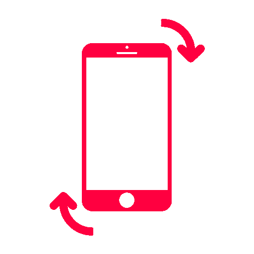

<div id="turn-phone-container" *ngIf="activeMessage; else presentation">
  <h2>{{presentationPage.turnPhoneTitle}}</h2>
  
</div>

<ng-template #presentation>
  <!-- 
    There are 2 options:
    CHOSEN ONE: putting each iframe manually
    or solve the unsafe url problem
   -->

   <iframe src="https://onedrive.live.com/embed?resid=41F21928ABD61941%21944&amp;authkey=%21AK3RlJb_ZmIVfsY&amp;em=2&amp;wdAr=1.3333333333333333"
   class="screen" *ngIf="'HPU' === currentMachine" frameborder="0"></iframe>
 
   <iframe src="https://onedrive.live.com/embed?resid=41F21928ABD61941%211123&amp;authkey=!AD-R-ExtIii2GLE&amp;em=2&amp;wdAr=1.7777777777777777"
   class="screen" *ngIf="'TTU' === currentMachine" frameborder="0"></iframe>

  <!-- <ng-container *ngFor="let presentation of presentations"> -->
    <!-- <iframe class="screen" [src]="safe" frameborder="0"></iframe> -->
  <!-- </ng-container> -->
</ng-template>


